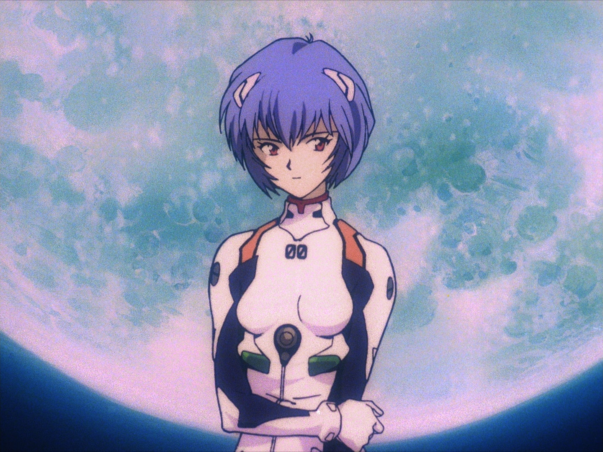

Cu toate că anime-ul sunt desene animate japoneze în mod eronat un "gen" (precum comedia, drama, etc.), în realitate este o formă de artă care include toate genurile întâlnite în literatură și cinema.
Anime are numeroase genuri tipice găsite în orice formă a mass-mediei. Asemenea genuri le includ pe cele de acțiune, aventură, povești pentru copii, comedie, drama, fantezie medievală, horror, dragoste și S.F. Cele mai multe animeuri includ diverse componente ale fiecărui gen, la fel și o varietate de elemente tematice. Prin aceasta, multe serii pot fi categorisite în multiple genuri. De exemplu, Neon Genesis Evangelion poate fi considerat ca aparținând genului post-apocaliptic, S.F, mecha și dramă.
